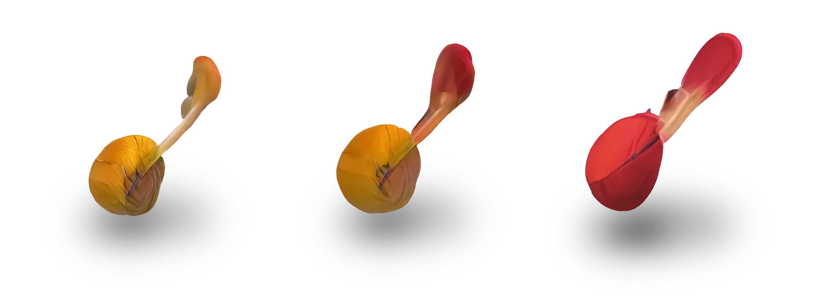
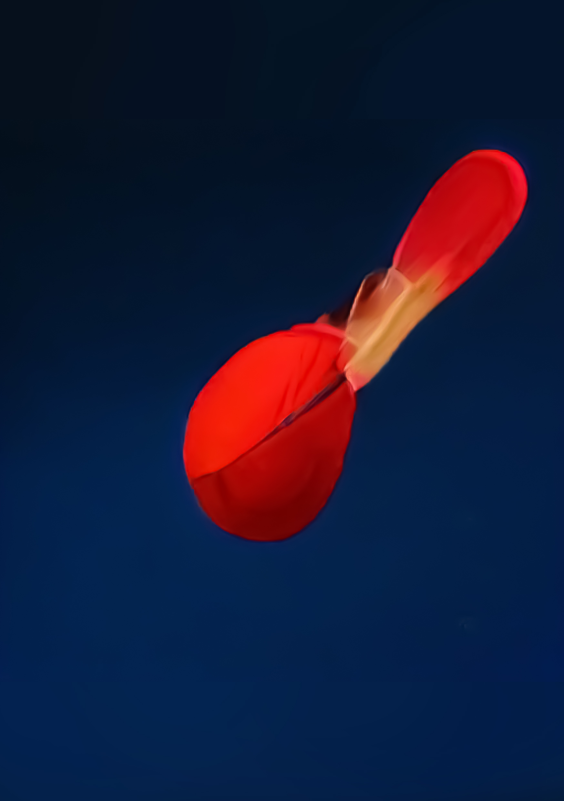

0543
Valonia ventricosa
Phylum: Chlorophyta
Class: Ulvophyceae
Order: Cladophorales
Family: Valoniaceae
Genus: Valonia
Species: V. ventricosa
Valonia ventricosa, also known as bubble algae or sailor's eyeballs, is a species of alga found in oceans throughout the world in tropical and subtropical regions. It is one of the largest unicellular organisms, if not the largest.Valonia ventricosa has a coenocytic structure with multiple nuclei and chloroplasts. This organism possesses a large central vacuole which is multilobular in structure (lobules radiating from a central spheroid region).
The entire cell contains several cytoplasmic domains with each domain having a nucleus and a few chloroplasts. Cytoplasmic domains are interconnected by cytoplasmic "bridges" that are supported by microtubules. The peripheral cytoplasm (whose membrane is overlaid by the cell wall), is only about 40 nm thick. Valonia ventricosa typically grow individually, but in rare cases they can grow in groups.
They appear in tidal zones of tropical and subtropical areas, like the Caribbean, north through Florida, south to Brazil, and in the Indo-Pacific. Overall, they inhabit every ocean throughout the world, often living in coral rubble. The greatest observed depth for viability is approximately 80 metres (260 ft).

Copyright 2021 by Nouveaux Specimens.
All Rights Reserved.